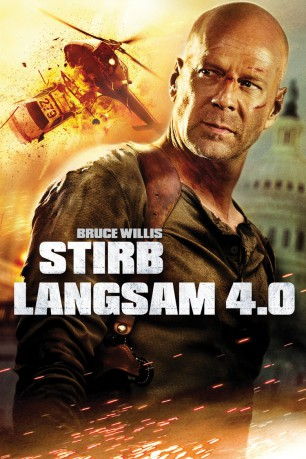
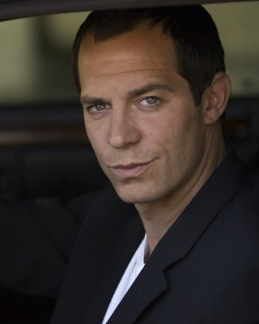
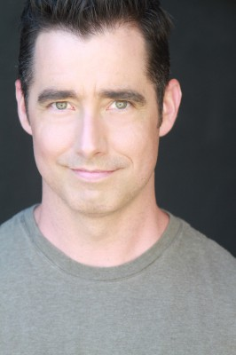
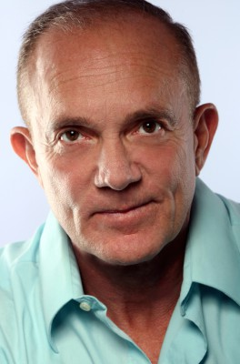
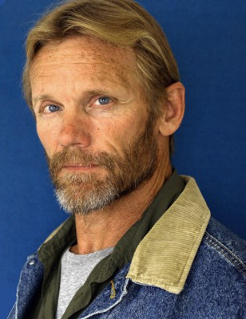
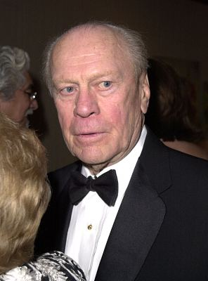

#429 Stirb langsam 4.0
Alternativ: Live Free or Die Hard
 
 IMDB-Wertung: 7.1 / 10
IMDB-Wertung: 7.1 / 10  Metascore: 69
Metascore: 69 
Die gesamte USA wird von einem bisher unvorstellbaren Akt des Terrorismus bedroht, der sich innovativster Techniken bedient und mittels Computerkraft das Land ins Chaos zu stürzen vermag. Die IT-Infrastruktur des Landes wird komplett außer Kraft gesetzt, Kommunikation und Bankwesen liegen lahm und die überraschten Behörden wissen zunächst nichts entgegen zu setzen. Nur ein Mann kann den Terror aufhalten: Der New Yorker Polizist John McClane hält nichts von modernem Schnickschnack und macht sich auf seine eigene Art auf die Jagd nach dem Drahtzieher des spektakulären Coups. Unterstützt wird er dabei von dem jungen Greg, den McClane eigentlich nur von New Jersey nach Washington bringen sollte. Doch mal wieder ist der alte Haudegen zur falschen Zeit am falschen Ort…
Jahr: 2007
Dauer: 128 Minuten
FSK: 16
Land: USA Studio: 20th Century FoxTonspuren:
Untertitel: Deutsch,
Auflösung: 1080p (1920x800) Größe: 12492 MB
Genre: Action, Abenteuer, Thriller
Regisseur:  Len Wiseman
Len Wiseman
Drehbuch: Mark Bomback, Mark Bomback, David Marconi, John Carlin, Roderick Thorp
Soundtrack: Marco Beltrami
Darsteller:
 Bruce Willis als John McClane
Bruce Willis als John McClane Timothy Olyphant als Thomas Gabriel
Timothy Olyphant als Thomas Gabriel Justin Long als Matthew 'Matt' Farrell
Justin Long als Matthew 'Matt' Farrell Maggie Q als Mai Linh
Maggie Q als Mai Linh Cliff Curtis als FBI Deputy Director Miguel Bowman
Cliff Curtis als FBI Deputy Director Miguel Bowman- Jonathan Sadowski als Trey
- Andrew Friedman als Casper
 Kevin Smith als Frederick 'Warlock' Kaludis
Kevin Smith als Frederick 'Warlock' Kaludis-  Yorgo Constantine als Russo
 Cyril Raffaelli als Rand
Cyril Raffaelli als Rand- Chris Palermo als Del
 Mary Elizabeth Winstead als Lucy Gennaro McClane
Mary Elizabeth Winstead als Lucy Gennaro McClane Sung Kang als Raj
Sung Kang als Raj Zeljko Ivanek als Agent Molina
Zeljko Ivanek als Agent Molina- Christina Chang als Taylor
- Jake McDorman als Jim
 Rosemary Knower als Mrs. Kaludis
Rosemary Knower als Mrs. Kaludis-  Gerald Downey als Hoover Agent
 Allen Maldonado als Goatee
Allen Maldonado als Goatee- Jim Cantafio als Deli Owner
 Chris Ellis als Scalvino
Chris Ellis als Scalvino- Regina McKee Redwing als Nearby Agent
- Tony Colitti als Chief Hazmat Agent
 Tim DeZarn als Police Sergeant
Tim DeZarn als Police Sergeant- Kurt David Anderson als Miller
 Matt O'Leary als Clay
Matt O'Leary als Clay Nadine Ellis als Teller
Nadine Ellis als Teller- Ethan Flower als Trader
- Nick Jaine als Phone Guy
 Tim Russ als Chuck Summer
Tim Russ als Chuck Summer-  Joe Gerety als Jack Parry
- Edward James Gage als On Duty PP Operator
- Edoardo Costa als Emerson
 Yancey Arias als Agent Johnson
Yancey Arias als Agent Johnson-  Rick Cramer als MP Rodriguez
- Dennis Depew als D.C. Cop
 John Lacy als EMT
John Lacy als EMT- Diana Gettinger als FBI Dispatcher
- Matthew Bowen als Angry Civilian , uncredited
 George W. Bush als Himself , archive footage, uncredited
George W. Bush als Himself , archive footage, uncredited Jimmy Carter als Himself , archive footage, uncredited
Jimmy Carter als Himself , archive footage, uncredited- Elena Caruso als Newscaster , uncredited
 Bill Clinton als Himself , archive footage, uncredited
Bill Clinton als Himself , archive footage, uncredited- Clay Cullen als Assassin , uncredited
- Andy Dylan als Terrorist Blown Up by Fire Extinguisher , uncredited
 Dwight D. Eisenhower als Himself , archive footage, uncredited
Dwight D. Eisenhower als Himself , archive footage, uncredited Peter Epstein als Terrorist Truck Driver , uncredited
Peter Epstein als Terrorist Truck Driver , uncredited Liam Ferguson als Government Worker , uncredited
Liam Ferguson als Government Worker , uncredited-  Gerald Ford als Himself , archive footage, uncredited
 Paul Grace als D.C. Cop at Traffic Control , uncredited
Paul Grace als D.C. Cop at Traffic Control , uncredited
Datei: X:\5-Pentalogie(A-Z)\Stirb Langsam\Stirb langsam 4.0 (2007, FSK16, 1920x800).mkv seit 21.02.2015
Festplatte: HD Collection-3(N-Z)-6(A-Z)
 Es gibt insgesamt 8 Filme in der Gruppe '5-Pentalogie(A-Z)\Stirb Langsam'
Es gibt insgesamt 8 Filme in der Gruppe '5-Pentalogie(A-Z)\Stirb Langsam'